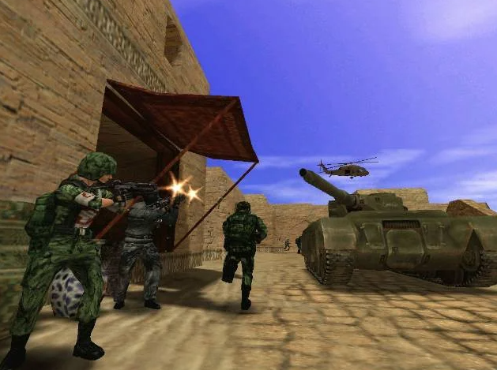
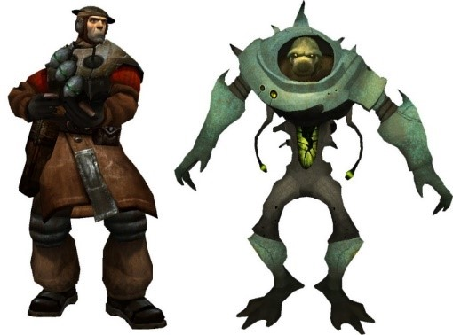
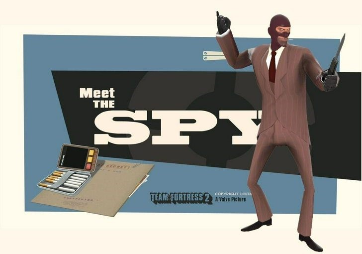
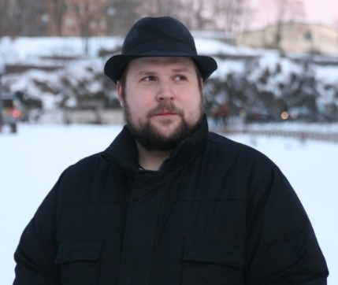
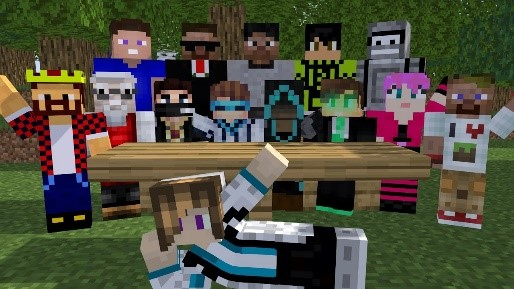

Истории успеха
История ТF2
Team Fortress 2 (2007) сохраняет популярность спустя 15 лет благодаря уникальному стилю и регулярным обновлениям, получив признание критиков и игроков.

В Quake Id Software впервые в индустрии использовала 3D-модели вместо спрайтов и создала полностью трехмерный мир. Разработчики предложили всем желающим доступ к QuakeC – языку, на котором была написана игра. Так появились моды, один из которых в итоге обойдет по популярности саму Quake.
Это интересно
Модификацию «Team Fortress» создали три австралийца Робин Уокер, Джон Кук и Ян Кофли. Вместе они разрабатывали моды для Doom, участвовали в турнирах по Quake. Quake была полностью трехмерной, и как только id Software выпустила Quake C, друзья поняли, что могут перенести любимые элементы на новый движок.
Друзья выпустили первую версию мода 24 августа 1996 года. Это была командная версией карты Fortress в Doom. В первых версиях мода не было команд, каждый играл сам за себя, а все виды оружия были взяты из оригинальной Quake. Но классы появились сразу: Scout, Sniper, Soldier, Demoman и Medic.

Team Fortress Classic
Valve’s Team Fortress. С таким названием принято ассоциировать официальное рождение игры Team Fortress 2 в 1998 году. Сразу после того, как Valve приняли в свою команду разработчиков оригинального мода Team Fortress на движке Quake и с ними был заключён контракт, началась работа над продолжением серии. Параллельно с этим началась работа и над адаптацией оригинальной игры на движок GoldSource под названием Team Fortress Classic.
Игровой процесс строился на противостоянии двух команд в различных игровых режимах. Кардинальным отличием от игры-прародителя стал сильный упор на реализм с добавлением элементов стратегии.
Теперь командам было необходимо выполнять особые задачи для достижения победы, будь то атакующая или обороняющаяся сторона. Каждая карта должна была иметь свой собственный сценарий. Например, известен сценарий карты под названием «Lobotomy», где атакующей стороне требовалось сломать защитные системы комплекса обороняющихся, получить доступ к реактору комплекса и уничтожить его. Другая команда должна была всячески защищаться.
Это интересно
Главным отличием арсенала персонажей от оригинальной версии стало то, что место бластеров и рейлганов заняли реальные образцы оружия, со своими характерными особенностями. В механику стрельбы было добавлено изменение урона от пуль, в зависимости от дистанции. Причём у каждого ствола, этот показатель был индивидуален. И если снайперская винтовка причиняла большой урон практически на любой дальности выстрела, то дробовик был практически бесполезен уже на средних дистанциях боя.
После релиза в апреле 1999 года Team Fortress Classic, новую игру было решено показать на выставке Е3, проходившей в мае того же года. Но уже под другим названием и с некоторыми изменениями. В мае 1999 года Valve выкупила Team Fortress Software, и вскоре представила Team Fortress: Brotherhood in Arms на E3.
В ней было больше классов, чем в оригинальной версии игры и особый упор на командное взаимодействие. Невидимый командир, наблюдающий за всей картой, должен был контролировать отряды, раздавая приказы. Офицер с прибором ночного видения и дымовой гранатой отвечал за боевой дух команды; повышая мораль, он увеличивал скорость и меткость игроков. Игроки могли помогать друг другу – например, вставлять патроны в пулеметный станок, пока товарищ из него стреляет.
Team Fortress: Invasion
В 2002 году Valve начала переработку Team Fortress, сместив фокус с выполнения сценариев на постоянную борьбу за ресурсы. Игра стала повествовать о противостоянии людей и пришельцев в космосе. Были добавлены управляемый транспорт и новые строительные объекты, а арсенал стал более футуристичным. Каждая команда имела свою базу и площадки для строительства укреплений, таких как наблюдательные вышки и турели, которые можно было грабить у противника.
К концу 2002 года визуальный стиль игры изменился на стимпанк. В феврале 2003 года была представлена демоверсия, после которой разработка продолжилась в новом стиле. В результате стратегическая составляющая упростилась: большинство инженерных построек и транспорт были удалены, а театр военных действий переместился на Землю.
Появились новые классы: "Поддержка" для людей и "Эскорт" для пришельцев, а также система прокачки способностей, приобретаемых за ресурсы. Игроки могли голосовать за улучшения, которые становились доступны всем в текущей сессии.
В игру были добавлены особые события, такие как метеоритный дождь, и NPC под названием "Жуки", делившиеся на "Рабочих" и "Воинов". Однако их роль в игре осталась неясной. В сентябре 2003 года произошла утечка материалов, включая исходные коды этой версии Team Fortress 2, после чего концепция игры снова изменилась.
Team Fortress 2
Лишь в 2004-м Valve подтвердила, что Team Fortress 2 все еще находится в разработке. До первого трейлера пришлось ждать еще год. Все это было не просто так – Valve действительно работала над TF и создала 3-4 различных варианта игры. Позже станет известно, что Invasion не имела никакого отношения к релизной версии.

Это важно!
Бесплатность, доступность и приятный арт-дизайн — безусловно, крайне важные для игры черты, однако для того, чтобы она врезалась в память, ей нужен ещё какой-нибудь яркий персонаж, маскот, ставший бы её лицом. У мультиплеерных шутеров до TF2 такого не было: везде то какие-то унылые морпехи.
Пусть их и зовут по-старому (Снайпер, Инженер, Пулемётчик), каждый из них теперь полноценный персонаж. Со своими привычками, характером, акцентом и отношением к коллегам по наёмничеству. Их не спутаешь не только по силуэту, что немаловажно для мультиплеерного шутера, но и по голосу, по манере общения, по анимации. Именно на девяти классах/героях держится весь шарм игры, весь юмор; понимая это, разработчики ещё до релиза начали выпуск роликов Meet the Team, вмиг ставших вирусными.
И на этом они не остановились. Вслед за роликами пошли комиксы: сперва небольшие, фактически рекламные брошюры к обновлениям игры, а затем полноценные графические новеллы. Персонажи получили имена и биографии, противостояние красной и синей команд обросло предысторией, и лор игры со временем разросся до внушительных размеров. Между 2009-м и 2017-м TF2 была не просто шутером, но и огромной абсурдной историей.

Почему TF2 стала успешной?
Так же нужно учитывать не очевидные вещи, следствие которых игра становится продуманной и завлекающей. Например, в игре существует имплицитный уровень сложности. То есть при таком выборе уровня сложности игрокам дает возможность регулировать уровень решаемых ими задач, принимая стратегические решения. Именно этой задачей служат классы в игре (снайпер, шпион медик и так далее.)
В игре есть 9 классов персонажей. Играя за снайпера, потребуется навык точного прицеливания, а при игре за инженера или медика подобные навыки не нужны в принципе. Таким образом, игроки выбирают степень и тип задач, которые они хотят, не открывая несуразное окно выбора сложности. И в отличие от эксплицитного выбора сложности, эта система хорошо работает в состязательных многопользовательских играх.
Так же вот еще некоторые причины успеха игры:
- Уникальный стиль и юмор. Графика в стиле мультфильма и яркие персонажи делают игру визуально приятной и запоминающейся. Каждый из девяти классов имеет свою индивидуальность, которая раскрывается через диалоги, анимации и стиль игры.
- Разнообразие режимов. TF2 есть множество режимов: захват флага, контроль точек, нападение/защита и другие. Это позволяет разнообразить игровой процесс и не даёт ему наскучить.
- Сообщество. TF2 славится своим активным и дружелюбным сообществом. В игре можно найти как новичков, так и ветеранов, которые с радостью помогут освоить игру.
Minecraft
Minecraft – феномен игровой индустрии, сохраняющий популярность благодаря простого геймплея кроссплатформенности и возможности для творчества.
Это интересно
Minecraft (изначально CubeGame) вдохновленный механиками InfiniMiner и стал ее копией. В конце концов в дальнейшем этот простой клон станет той самой вещью, которая своим существованием будет говорить инди-разработчикам: «не все потеряно, ребята, ведь любой из вас может сделать что-то великое и такое же прекрасное».
Маркус Перссон пошёл дальше — ему хотелось создать особый мир, в котором можно делать абсолютно всё, где не будет деталей, которых нельзя сломать. Во время создания проекта разработчик действовал максимально свободно. На тот момент Маркус не ожидал такой популярности своего проекта.
Изначально игра называлась Cave Game. Но затем разработчик обсудил название проекта с другими пользователями и решил изменить его на Minecraft. Это составное слово: mine (шахта, добывать) и craft (ремесло, создавать).
Minecraft быстро стал приобрел популярность после релиза. 2009 - начало 2010-х годов можно считать "Золотым" временем Minecraft. Постоянно выходящие обновления и сама задумка игры были изящны и просты. В начале игра была относительно маленькой, в ней была только полоска здоровья, примитивные ландшафты и пара мобов, однако геймплей очень быстро развивался, то и дело постоянно показывая игроку самых разных маленьких решений по части механик и геймплея.

В результате в 2013-м был запущен сервис Minecraft Realms, позволяющий за 13 долларов в месяц создавать всё те же приватные сервера. Разработчики видели в этом благую цель, но на деле же получилось с точностью до наоборот: Mojang обвинили в жадности и даже сравнили с EA. Сам Нотч вообще не был готов к обрушившейся на него ответственности.
В итоге геймдизайнер написал в Twitter(нынешний Х), что устал от всего происходящего, и поинтересовался, не хочет ли какая-нибудь из крупных компаний купить его долю. Очередь из желающих приобрести перспективную студию набралась приличная. По прошествии нескольких месяцев Mojang вместе с правами на игру купила Microsoft за 2,5 млрд долларов, а Маркус вместе с несколькими ключевыми разработчиками покинул студию
После ухода из Mojang Перссон работал над несколькими проектами, большая часть которых либо не пережила бета-тест, либо умерла ещё в зародыше . Единственной более-менее видной игрой стала ролёвка Caller’s Bane.
После Mojang стал развивать игру в лучшую сторону, добавляя все больше и больше контента в игру, например, новых мобов, механик и совершеннее старых. Из-за того, что Mojang не стал изменять главную идею, а именно стиль «кубизма».
Популярность игры обусловлена свободой творчества, простотой и поддержки модификаций от других пользователей.
Кроме своей бомбической идеи Minecraft стал той игрой, которая появилась на заре развития соцсетей, а именно Youtube. Популярность данной игры усилили блогеры, создающие контент о его возможностях.
Подведём итоги
Благодаря своей концепции Minecraft стал той самой игрой, которую легко было освоить и интересно смотреть со стороны, он вообще был идеален для всяких летсплеев (формат видеороликов, в которых игрок или же группа игроков показывает и комментирует прохождение игры) и потому стал выходить в тренды и держаться в них вот уже 10 лет.